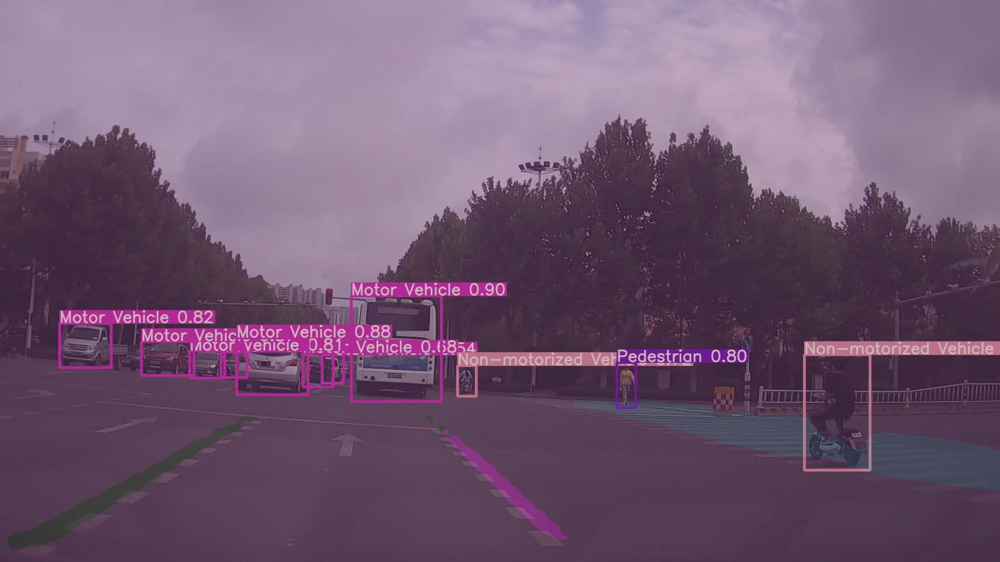

百度大数据竞赛划水记录¶
赛题为车载影像
aistudio 平台，所以我最先使用paddle框架进行尝试，baseline给的模型为ppyolo,尝试的跑了一天，结果ap惊人的才0.02，交流群里很多人也是这样，所以我果断放弃，后来发现可能是因为锚框的大小选取有问题，先进行autoAnchor聚类得到最佳锚框可能会获得更好的结果，我懒得尝试了
之后转战faster-rcnn 因为提交结果对模型的大小有限制，必须在200m以内，而我这个还单单只是检测的模型，故我选用resnet-18作为骨干，head使用fpn提高感受野，验证集ap能达到0.18！此时提交f=0.2瞬间升到了前十，还有些小激动
之后便开始了无脑调参之旅。。。大无语事件接连发生
- 拿默认配置文件训练一晚上直接报错，报错原因好像是验证的时候tensor出现了-1的情况，所以无法计算ap，程序就直接停止了，这个错误在相同代码第二次跑的时候就消失了，玄学

- 默认学习率进行训练时，几个batch过后loss直接变为nan，只能降低学习率0.001
- cascade rcnn 的ap倒是可以稳步上升，但是模型导出超过了200m，paddle暂不支持rcnn模型的压缩

所以就这样一次训练不如一次，干脆放弃了，如果有幸进复赛再好好搞
就这？就这？
就这一个草率的模型居然以30多名的成绩进了复赛（好水），复赛就不一样了
复赛我毅然决然的放弃了paddle，用最火的yolov5尝试一下，因为之间经常跑yolov5，其性能和速度都是很不错的，接下来就开始跑了
目标检测--YOLOV5¶
数据处理¶
本次比赛所用数据格式为coco格式(但不完全是)，标注数据只有图像名称，bbox坐标，连通域信息
所以如果要用主流网络训练的话建议先将次数据转为coco数据格式，yolov5官方给出了各种数据转为yolo格式代码
我更改以后如下
import json
import cv2
import pandas as pd
from PIL import Image
from utils import *
def convert_coco_json(json_dir='../coco/annotations/', use_segments=False, cls91to80=False):
save_dir = make_dirs() # output directory
coco80 = coco91_to_coco80_class()
# Import json
for json_file in tqdm(Path(json_dir).resolve().glob('*.json')):
fn = Path(save_dir) / 'labels' # / json_file.stem.replace('instances_', '') # folder name
with open(json_file) as f:
data = json.load(f)
# Create image dict
# images = {'%g' % x['id']: x for x in data['images']}
# Write labels file
# if x['iscrowd']:
# continue
img_path = os.path.join('../train (1)/train/image/', json_file.stem)
frame = cv2.imread(img_path + '.jpg')
h, w, f = frame.shape[0], frame.shape[1], json_file.stem
for x in data:
# img = images['%g' % x['image_id']]
# h, w, f = img['height'], img['width'], img['file_name']
# The COCO box format is [top left x, top left y, width, height]
box = np.array([x['x'], x['y'], x['width'], x['height']], dtype=np.float64)
box[:2] += box[2:] / 2 # xy top-left corner to center
box[[0, 2]] /= w # normalize x
box[[1, 3]] /= h # normalize y
# Segments
if use_segments:
segments = [j for i in x['segmentation'] for j in i] # all segments concatenated
s = (np.array(segments).reshape(-1, 2) / np.array([w, h])).reshape(-1).tolist()
# Write
if box[2] > 0 and box[3] > 0: # if w > 0 and h > 0
cls = coco80[x['type'] - 1] if cls91to80 else x['type'] - 1 # class
line = cls, *(s if use_segments else box) # cls, box or segments
with open((fn / f).with_suffix('.txt'), 'a') as file:
file.write(('%g ' * len(line)).rstrip() % line + '\n')
if __name__ == '__main__':
source = 'COCO'
path = '..\\train (1)\\train\\label'
if source == 'COCO':
convert_coco_json(path) # directory with *.json
# zip results
# os.system('zip -r ../coco.zip ../coco')
由此可在new_dir中得到yolo数据集标签格式 *.txt，并将其分成训练集和测试集，图像文件和标签文件放入对应文件夹。
训练¶
参考yolov5官方readme，最近yolov5更新到5.0，看评测标准性能又有了飞跃，正好借着这次比赛尝试一下
修改cfg.yml data.yml，更改为自己的路径
前期有点虚，只训练了50个epoch，一天以后，ap便达到了0.4，
评估¶
这次和其他比赛不一样，官方并没有给出测试集，所以只训练完还不可以，提交结果要求提交代码，并在其服务器环境下顺利运行，并生成所要求的json文件
import sys
import time
from pathlib import Path
import json
import torch
from numpy import random
from env.experimental import attempt_load
from env.datasets import LoadImages
from env.general import check_img_size, non_max_suppression, apply_classifier, \
scale_coords, set_logging
from env.torch_utils import select_device, load_classifier, time_synchronized
def detect(datatxt, resultjson, save_img=False):
augment = False
conf_thres = 0.5
iou_thres = 0.5
weights, imgsz = './weights/yolov5m6.pt', 1280
save_img = False # save inference images
view_img = False
save_txt = True
webcam = False
device = ''
source = datatxt
# Initialize
set_logging()
device = select_device(device)
half = device.type != 'cpu' # half precision only supported on CUDA
# Load model
model = attempt_load(weights, map_location=device) # load FP32 model
stride = int(model.stride.max()) # model stride
imgsz = check_img_size(imgsz, s=stride) # check img_size
if half:
model.half() # to FP16
# Second-stage classifier
classify = False
if classify:
modelc = load_classifier(name='resnet101', n=2) # initialize
modelc.load_state_dict(torch.load('weights/resnet101.pt', map_location=device)['model']).to(device).eval()
# Set Dataloader
vid_path, vid_writer = None, None
if not webcam:
dataset = LoadImages(source, img_size=imgsz, stride=stride)
jdict, stats, ap, ap_class = [], [], [], []
result = {}
result["result"] = []
det_dic = {0:3,1:2,2:1,9:7}
# Get names and colors
names = model.module.names if hasattr(model, 'module') else model.names
colors = [[random.randint(0, 255) for _ in range(3)] for _ in names]
# Run inference
if device.type != 'cpu':
model(torch.zeros(1, 3, imgsz, imgsz).to(device).type_as(next(model.parameters()))) # run once
t0 = time.time()
for path, img, im0s, vid_cap in dataset:
img = torch.from_numpy(img).to(device)
img = img.half() if half else img.float() # uint8 to fp16/32
img /= 255.0 # 0 - 255 to 0.0 - 1.0
if img.ndimension() == 3:
img = img.unsqueeze(0)
# Inference
t1 = time_synchronized()
pred = model(img, augment=augment)[0]
# Apply NMS
pred = non_max_suppression(pred, conf_thres, iou_thres)
t2 = time_synchronized()
# Apply Classifier
if classify:
pred = apply_classifier(pred, modelc, img, im0s)
# Process detections
for i, det in enumerate(pred): # detections per image
if webcam: # batch_size >= 1
p, s, im0, frame = path[i], '%g: ' % i, im0s[i].copy(), dataset.count
else:
p, s, im0, frame = path, '', im0s, getattr(dataset, 'frame', 0)
p = Path(p) # to Path
s += '%gx%g ' % img.shape[2:] # print string
gn = torch.tensor(im0.shape)[[1, 0, 1, 0]] # normalization gain whwh
txt_path = p.stem
if len(det):
# Rescale boxes from img_size to im0 size
det[:, :4] = scale_coords(img.shape[2:], det[:, :4], im0.shape).round()
# Print results
for c in det[:, -1].unique():
n = (det[:, -1] == c).sum() # detections per class
s += f"{n} {names[int(c)]}{'s' * (n > 1)}, " # add to string
# Write results
for *xyxy, conf, cls in reversed(det):
if save_txt:
result_one = {}
result_one["image_id"] = int(txt_path)
if int(cls.item()) != 0 and int(cls.item()) != 1 and int(cls.item()) != 2 and int(
cls.item()) != 9:
continue
result_one["type"] = det_dic[int(cls.item())]
result_one["x"] = xyxy[0].item()
result_one["y"] = xyxy[1].item()
result_one["width"] = (xyxy[2].item() - xyxy[0].item())
result_one["height"] = (xyxy[3].item() - xyxy[1].item())
result_one["segmentation"] = []
result["result"].append(result_one)
# with open(txt_path + '.txt', 'a') as f:
# f.write(('%g ' * 5 + '\n') % (cls, *xywh)) # label format
if save_img or view_img: # Add bbox to image
label = f'{names[int(cls)]} {conf:.2f}'
# plot_one_box(xyxy, im0, label=label, color=colors[int(cls)], line_thickness=3)
# Print time (inference + NMS)
print(f'{s}Done. ({t2 - t1:.3f}s)')
with open(resultjson, 'w') as outfile:
json.dump(result, outfile)
print(f'Done. ({time.time() - t0:.3f}s)')
if __name__ == '__main__':
abc = {}
abc["input"] = sys.argv[1]
abc["output"] = sys.argv[2]
with torch.no_grad():
detect(abc["input"], abc["output"])
终端命令
python predict.py data.txt result.json
语义分割 -- deeplabv3+¶
前言¶
因为前期并没有太多接触过语义分割，只跑过一个unet，所以真的可以算是零基础，教程也比较接地气
数据处理¶
语音分割数据集分为
- COCO
- cityspace
大佬开源：mutilyolov5¶
最终效果¶
